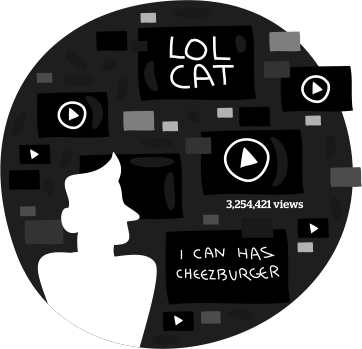
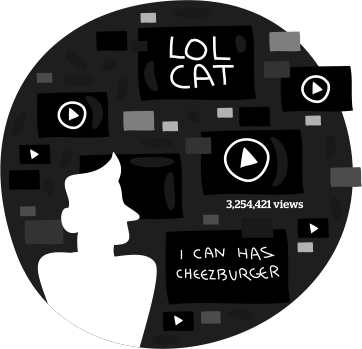

Dont Trust Your Cats!!!!!! @wwwcdc 3hr ||| Facebook has been infected. @wwwcdc 2hr
IN THE BEGINNING
Cats (Felis silvestris catus), known and worshiped in Ancient Egypt as "Mau", were important in ancient Egyptian society. It has been estimated that cats domesticated humans in Egypt around 10,000 years ago.
For a few Thousand years the Egyptians on the in upper and lower Egypt were still engaged in a religion centering around the worship of cats and gods in the shape of cats.
The cats were happy for a few thousand years, until the Egyptian culture was destroyed, and the cats left desolated.
As the years went by, the cats' status was decreasing and they were left with only mice as their main food source.
Cats developed Toxoplasma gondii (tŏk'sə-plāz'mə gŏn'dē-ī'), which is a dangerous unfamiliar parasite, that caused mice to offer themselves to the cats for easy meal.
Infected mice usually lose their innate fear of cats and turn into zombies.
The infection can have a permanent effect since they do not return to fear the cats even after the parasite is no longer detectable in their brains.
Today, in humans, Up to 80% of the population may be infected, depending on eating habits and exposure to cats.
About 50 years ago cats started making their move inside the houses of humans, no one asked any questions…
Cats today are keeping a close eye on their owners. Years of closely watching every move of their owners have made them capture life patterns and habits. This had led them to come up with their next and final plan - taking over the web.
the humans have now became internet zombies, infecting the web…
What the toxoplasma has cost us:
Total number of monthly active Facebook users:
Total number of minutes spent on Facebook each month:
Precent of 18-34 year olds that check Facebook when they wake:
Users Upload of (Cat) Videos per Minute to YouTube!
Our extension shows the user the infected parts of the web, gives alerts and eye witness news.
This extension will notify you how to avoid the infected web-sites and keep our internets safe from harms!
Save the humans!


 

- Stay updated and notified 24/7
- Keep your internet safe
- Easy to install and use
- Report suspicious activities to warn others